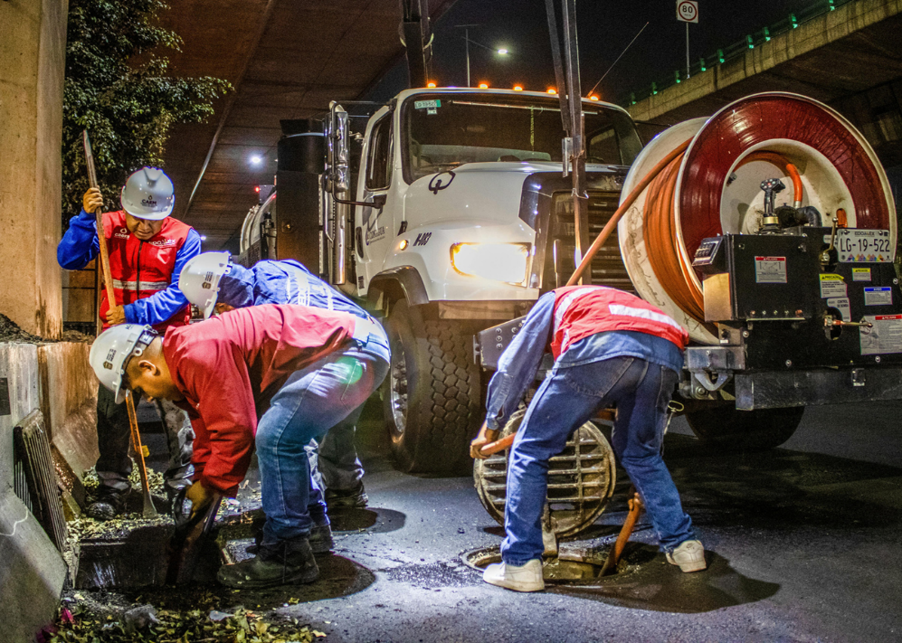
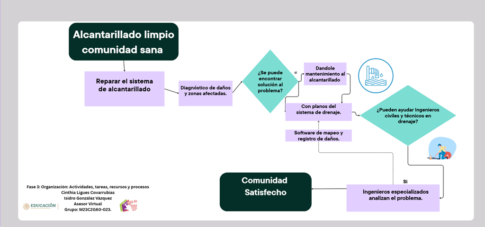
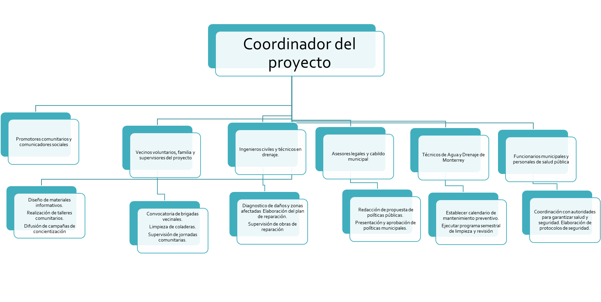

Proyecto final · Módulo 23
Alcantarillado limpio, comunidad sana
Proyecto comunitario para mejorar el funcionamiento del alcantarillado en la colonia Muriel, Escobedo, Nuevo León, mediante participación ciudadana, brigadas de limpieza y coordinación con autoridades.

Planeación
Objetivos del proyecto
Objetivo general
Mejorar el funcionamiento del alcantarillado en la comunidad Muriel, en Escobedo, mediante acciones comunitarias y coordinación con las autoridades, para garantizar la salud y seguridad de la población.
Objetivos específicos
- Implementar dos campañas de concientización sobre el uso correcto del drenaje.
- Organizar al menos tres brigadas vecinales para limpiar coladeras.
- Coordinar dos programas semestrales de mantenimiento preventivo con Agua y Drenaje de Monterrey.
Metas
Resultados esperados
Concientización
Realizar campañas, talleres, materiales didácticos y ferias comunitarias de educación ambiental.
Acción comunitaria
Organizar brigadas de limpieza e identificar zonas críticas con basura u obstrucciones.
Infraestructura
Diagnosticar el alcantarillado, establecer calendario de mantenimiento y gestionar apoyo institucional.
Justificación
Importancia social, ambiental y económica
Social
Involucra a familias, vecinos y voluntarios en acciones colectivas que fortalecen la organización comunitaria.
Ambiental
Disminuye la contaminación y previene inundaciones ocasionadas por coladeras obstruidas.
Salud pública
Reduce riesgos sanitarios relacionados con aguas residuales y espacios públicos contaminados.
Económico
Evita gastos médicos y costos elevados por reparaciones de emergencia.
Plan de acción
Fases para implementar el proyecto
Actividades previas
Diagnóstico de daños, elaboración del plan de reparación y reuniones con autoridades municipales.
Desarrollo
Calendario de mantenimiento preventivo, convenio de colaboración y propuesta de políticas municipales.
Concreción
Campañas de concientización, talleres comunitarios y brigadas vecinales de limpieza.

Dirección
División del trabajo
Colaboradores principales
- Ingenieros civiles y técnicos en drenaje.
- Funcionarios municipales y personal de salud pública.
- Técnicos de Agua y Drenaje de Monterrey.
- Vecinos voluntarios, familia y supervisores.

Control
Cronograma e indicadores
Visualización elaborada con los datos del archivo de Excel del proyecto.
Cronograma tipo Gantt
Junio · Julio · Agosto 2026Junio
Julio
Agosto
Actividad
S1S2S3S4S5S6S7S8S9S10S11S12
Actividad 1Reparar alcantarillado
Actividad 2Coordinación con autoridades
Actividad 3Mantenimiento preventivo
Actividad 4Políticas municipales
Actividad 5Campañas de concientización
Actividad 6Brigadas vecinales
Fase inicial
Fase desarrollo
Fase consecución
Duración por actividad
Barra horizontal basada en los días programados por actividad.
Recursos financieros
Barra vertical con el presupuesto estimado por actividad.
Medir y corregir
El mejor escenario se logra manteniendo comunicación constante, cumpliendo tiempos y usando herramientas digitales. El peor escenario requiere replantear el cronograma, redistribuir tareas y reforzar la coordinación.
CronogramaPresupuestoCalidadSatisfacciónRiesgosProductividadCumplimientoComunicaciónInnovaciónRetorno
Fuentes
Referencias
Domínguez, M. (2025, 8 octubre). Escobedo declara la guerra a la obstrucción de coladeras y sistemas pluviales. El Heraldo de México.
Espacio abierto para el aprendizaje. (2026). Sesión 1 semana 1 [Video]. YouTube.
Prepa en Línea-SEP. (2019). Tipos de planificación.
Servicios de Agua y Drenaje de Monterrey I.P.D. (s. f.). Sitio institucional.
Imágenes tomadas del documento del proyecto y recursos elaborados en Canva.